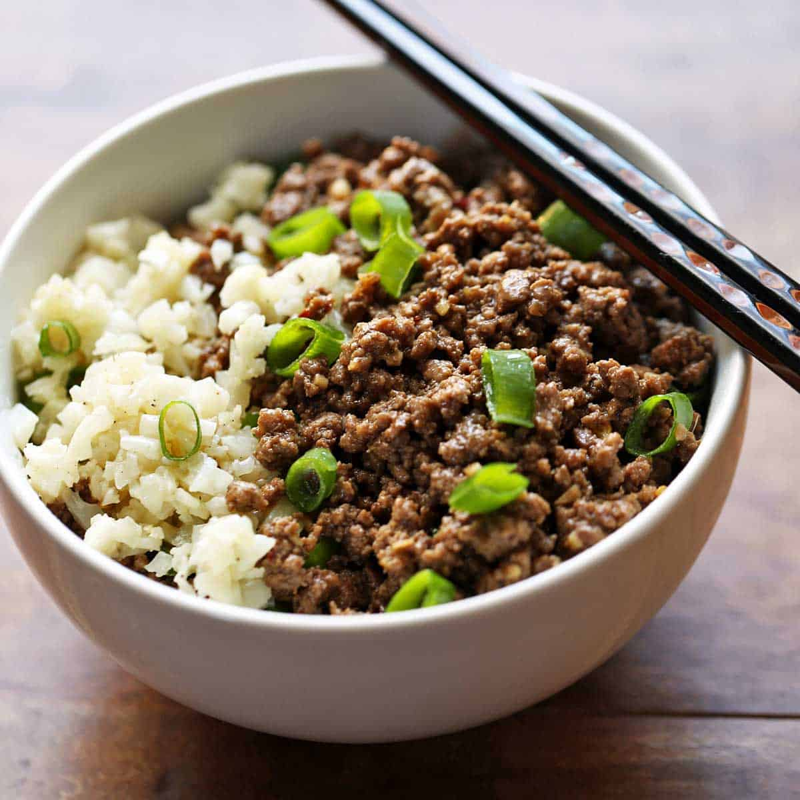

Korean Ground Beef
Home

Description
Fast, delicious, and cheap. Hide yo' project management triangles, cause this recipe has it all. If beef and rice sound boring, don't worry, because this recipe kicks up the heat while having a sweet & savory sensation.
If it has been a busy day and you don't want to hassle to satisfy the hunger, then whip this bad boy out.
Ingredients
Sauce
- 1/4 cup soy sauce
- 1 tablespoon honey
- 1 teaspoon cornstarch
- 1/2 teaspoon red pepper flakes
Stir-fry
- 2 tablespoons olive oil
- 1 lb lean ground beef
- 1 tablespoon fresh garlic
- 1 tablespoon fresh ginger
The Rest
- 1 bundle green onions
- 1 cup rice
Steps
- Measure, wash, and begin cooking the rice. If you don't have a rice cooker, be a peasant and just throw it into some water in a pot and boil it (1:2, 2 parts water to 1 part rice) till the rice has absorbed all the water and is fluffy
like a bunny.
- Prep the sauce. Mix it so everything is one and there are no clumps.
- Skin your ginger. I don't like the skin, you don't like the skin. I hope you've been practicing your whittling skills. Set aside.
- Heat olive oil in a pan at medium to medium low heat. Once hot, add the beef and crumble it.
- Once the beef is browned, add the garlic and grate the ginger into the pan.
- Stir for a bit until the garlic and ginger is fragrant. Add the sauce and stir more. Once the beef has been covered in sauce, turn off the heat.
- Cut up your green onions
- Dish your rice into a bowl. Layer the beef next. Top it all with that sweet sweet green onion.